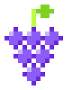

[ 01 ]
Videojuegos
Mundos por descubrir. Mecánicas que enganchan. Experiencias que queremos jugar tanto como crear.
GAME DESIGN · DESARROLLO
TEAMGRAPESINDEPENDENT CREATIVE STUDIO Hagamos algoUN PEQUEÑO ESTUDIO. MUCHA CURIOSIDAD.
Creamos videojuegos, software y cosas que todavía no sabemos cómo llamar.
Si nos da curiosidad, lo construimos.
¿Y si lo
hacemos?
01 / LO QUE NOS MUEVE
DISEÑAR. CONSTRUIR. REPETIR.Nos gusta cruzar disciplinas.
Ahí suelen aparecer las buenas ideas.
Mundos por descubrir. Mecánicas que enganchan. Experiencias que queremos jugar tanto como crear.
GAME DESIGN · DESARROLLOIdeas que se vuelven herramientas. Aplicaciones y experiencias digitales con intención, utilidad y personalidad.
APPS · WEB · HERRAMIENTASDel código al mundo físico. Electrónica, mecanismos y prototipos para explorar qué pasa cuando todo se conecta.
HARDWARE · EXPERIMENTACIÓN02 / EL LABORATORIO
LA CURIOSIDAD ESTÁ EN MARCHAUn experimento pequeño para empezar.
Porque las ideas también se prueban jugando.
↳ Este es nuestro espacio para experimentar. Pronto, más cosas hechas por el team.
03 / LAS PERSONAS DETRÁS DE LAS UVAS
Somos Emmanuel y Eliw. Diseñamos videojuegos y software, exploramos la mecatrónica y nos emocionamos con un poco de todo.
Team Grapes nace de esas ganas de hacer cosas juntos. De tomarnos nuestras ideas en serio y conservar lo que más nos gusta: divertirnos construyéndolas.
«Si nos da curiosidad,Llévate nuestro logo
vale la pena intentarlo.»
ASÍ EMPIEZA TODO
Entendemos la idea y lo que la hace interesante.
Construimos una primera versión para aprender.
Probamos, pulimos y damos el siguiente paso.
Un juego, una herramienta, un invento extraño.
Todo empieza con una idea que vale la pena explorar.
Crea un brief para compartir. Esta herramienta no envía mensajes.